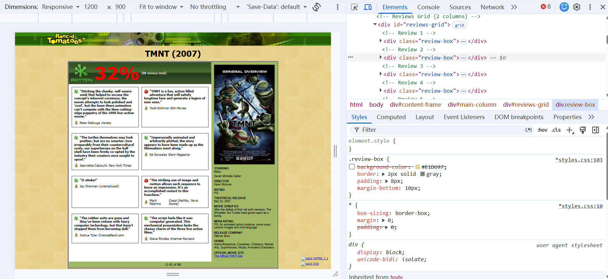
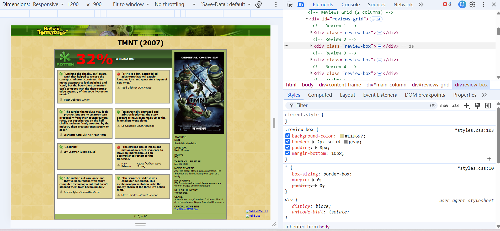
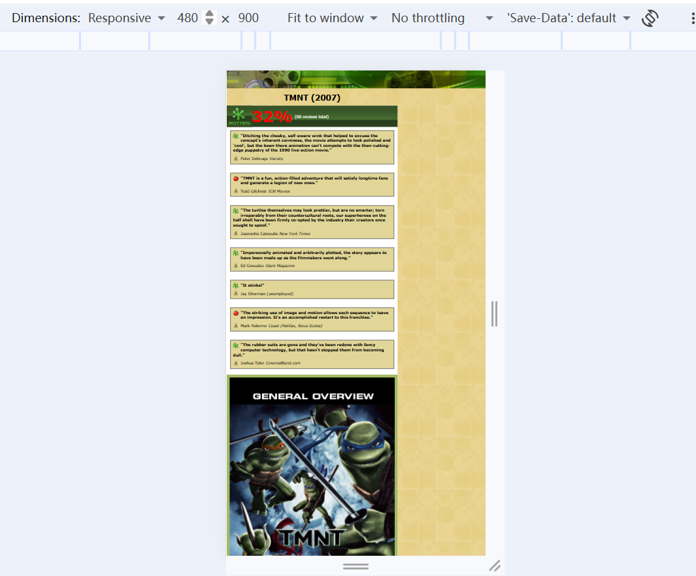
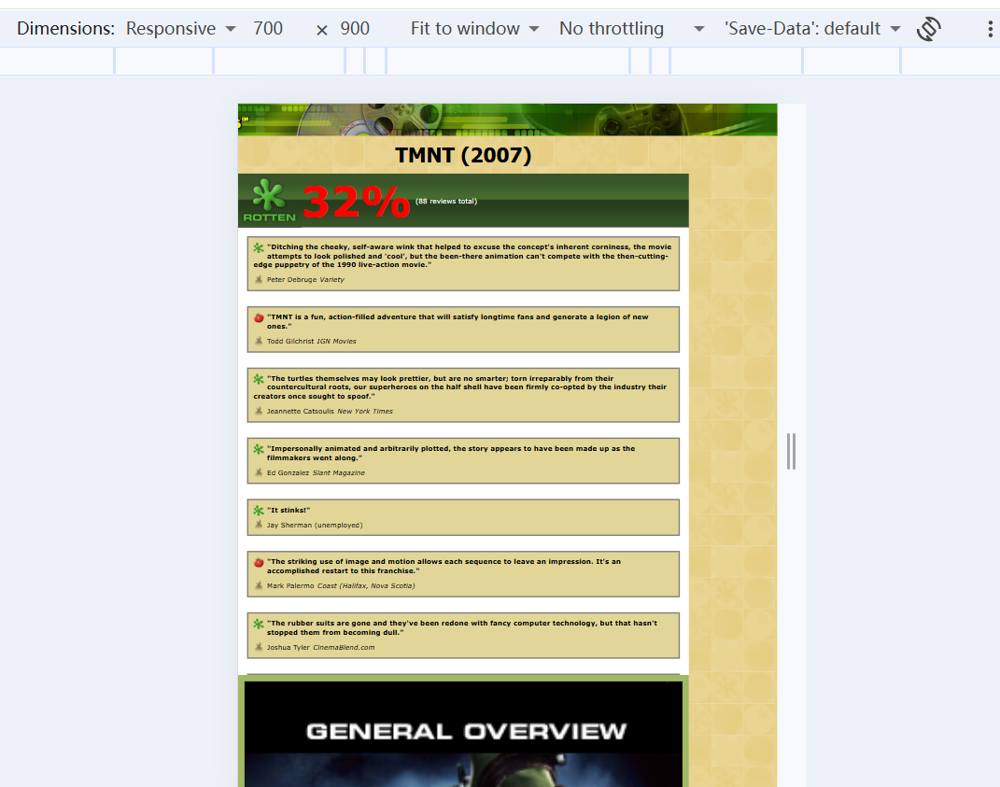
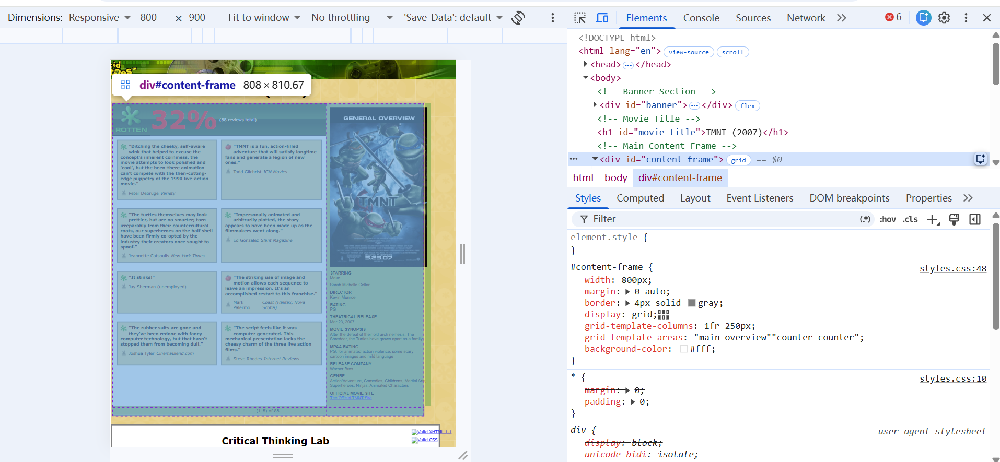
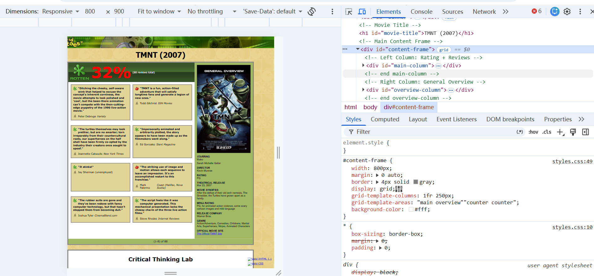
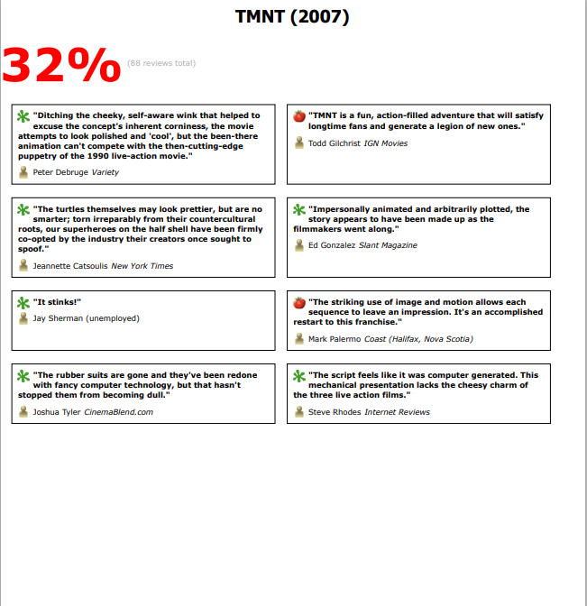
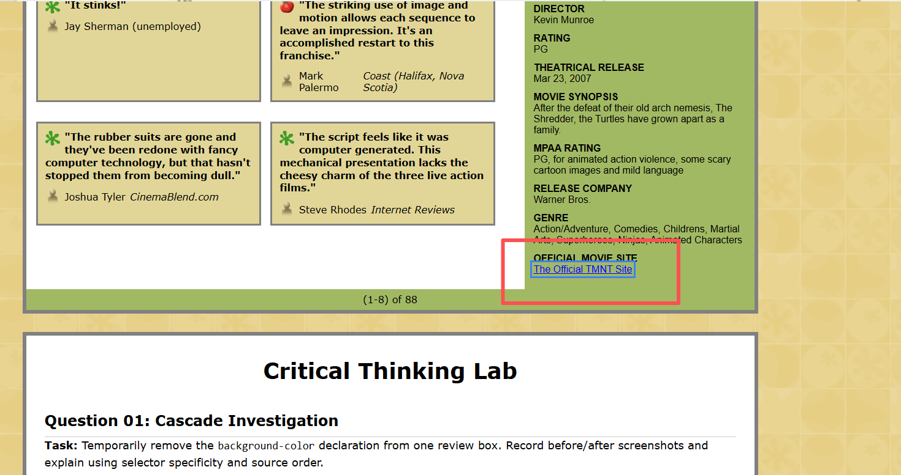

Critical Thinking Lab
Question 01: Cascade Investigation
Task: Temporarily remove the background-color declaration from one review box. Record before/after screenshots and explain using selector specificity and source order.
Before (background-color removed)

Figure Q01a: Review box without background-color. The box is transparent, showing the page background.
After (background-color restored)

Figure Q01b: Review box with background-color: #E1D697 restored.
CSS Rule That Paints the Box
.review-box {
background-color: #E1D697;
border: 2px solid gray;
padding: 8px;
margin-bottom: 10px;
}
Explanation
The .review-box class has specificity 0,0,1,0 (one class). No other rule targets the same element with higher specificity. The page background is set on body with specificity 0,0,0,1 (one element), which is lower. Because .review-box has higher specificity and appears later in the cascade, its background-color wins. Removing it makes the box transparent, revealing the body background image.
Question 02: Responsive Trade-off
Task: At exactly 480px wide, record the computed width of the main review region and sidebar. Identify one deliberate trade-off made to prevent horizontal scrolling.
Computed Values at 480px
#content-frame width: 100% (approximately 480px)#main-column width: 100% (approximately 480px)#overview-column width: 100% (approximately 480px)#reviews-grid columns: 1 column (from grid-template-columns: 1fr)
Screenshot at 480px

Figure Q02: Page at 480px. The layout stacks into a single column.
Deliberate Trade-off
At 480px, I changed #content-frame to grid-template-columns: 1fr and set #overview-column to width: 100%. This means the sidebar no longer sits next to the main content — it stacks below. The trade-off is that users must scroll further to see the General Overview, but the page avoids horizontal scrolling and remains readable.
What I Changed
I changed grid-template-columns from 1fr 250px to 1fr. Without this change, the 250px sidebar would overflow the 480px viewport, causing horizontal scrolling.
Why the Final Value Is Better
The final value (1fr) keeps the page within the viewport, eliminates horizontal scrolling, and keeps text readable. The stacked layout is easier to use on a phone than a squeezed two-column layout.
Question 03: Architecture Defense (Graduate)
Task: Build the major content frame with named Grid areas and the review metadata with Flexbox. Record the same page at 700px and 480px, then defend which relationship belongs to Grid and which belongs to Flexbox.
Screenshot at 700px

Figure Q03a: Page at 700px. The layout stacks into a single column.
Screenshot at 480px
Figure Q03b: Page at 480px. The layout remains readable with smaller fonts.
Grid: The Page Regions
#content-frame {
display: grid;
grid-template-columns: 1fr 250px;
grid-template-areas:
"main overview"
"counter counter";
}
Why Grid: The content frame is a two-dimensional layout (rows AND columns). Grid lets me name the areas (main, overview, counter) and control both axes at once. At 700px, I change grid-template-areas to stack them vertically.
Flexbox: The Review Metadata
.reviewer-info {
display: flex;
align-items: center;
gap: 5px;
}
Why Flexbox: The reviewer info is a one-dimensional row (icon + name + publication). Flexbox handles the alignment and spacing without needing fixed widths. This is a repeated component (8 reviews), so Flexbox keeps the CSS concise.
Flex-wrap Behavior
The banner uses Flexbox to center its content. The reviewer info uses Flexbox to align the icon, name, and publication in a row. Neither needs flex-wrap: wrap because their content fits on one line at all tested widths. If the viewport were narrower than the content, flex-wrap: wrap would allow the items to wrap to the next line instead of overflowing.
Layout Rationale
Grid is for the page shell (regions). Flexbox is for the components inside those regions (metadata rows). This follows the industry best practice: Grid for macro layout, Flexbox for micro layout. At 700px and 480px, Grid redefines the page structure, while Flexbox inside each review stays the same.
Question 04: Failure Analysis (Graduate)
Task: Introduce a controlled defect in a separate copy of your page that causes a validator error, a clipped review, or a broken print layout. Diagnose the defect from browser output and developer tools.
Controlled Defect
I removed box-sizing: border-box; from the universal selector. This causes the 4px border to be added to the 800px width, making the total 808px.
Defect State

Figure Q04a: DevTools Computed panel shows #content-frame width = 808px (800px + 8px border).
Diagnosis from DevTools
In DevTools, #content-frame shows:
- width: 800px
- border-left: 4px
- border-right: 4px
- Total computed width: 808px
The root cause is that box-sizing: border-box; was removed. Without it, the border adds to the width instead of being included inside it.
Corrected State

Figure Q04b: After adding box-sizing: border-box; back, the computed width is 800px.
Correction
* {
box-sizing: border-box;
margin: 0;
padding: 0;
}
Adding box-sizing: border-box; to the universal selector makes padding and border included inside the declared width. The content frame is now exactly 800px.
Why a Tempting Alternative Fails
A tempting fix is to change width: 800px to width: 792px. This would work for this specific border (4px each side = 8px total), but it fails if the border width changes later. Using box-sizing: border-box; is more robust because it works regardless of border or padding values.
Print Layout with print.css
Task: Create a clean print layout using a separate print.css stylesheet.
Print Preview

Figure Q05: Print preview. The banner, validator links, and Critical Thinking section are hidden. The content is single-column and black on white.
How It Works
The print.css file is linked with media="print", so it only applies when printing. It:
- Removes the background image
- Hides the banner, validator links, and Critical Thinking section
- Makes the content frame full-width
- Stacks the main column and sidebar vertically
- Adds
page-break-inside: avoid to review boxes to prevent awkward breaks
Reflection
A clean print layout is important because users may want to print the page for reference. Hiding decorative elements saves ink and keeps the printed page readable.
Focus State Audit
Task: Ensure all interactive elements have visible focus states for keyboard navigation.
Focus Styles Added
a:focus {
outline: 2px solid #3b82f6;
outline-offset: 2px;
}
a:hover {
outline: 2px solid #93c5fd;
outline-offset: 2px;
}
Focus State Screenshot

Figure Q06: Keyboard focus on a link showing the blue outline.
How to Test
Use the Tab key to navigate through the page. The validator links and the "Official TMNT Site" link should show a blue outline when focused. This makes the page usable without a mouse.
Reflection
Visible focus states are important for accessibility. Keyboard users need to see which element is currently selected. Without focus styles, keyboard navigation is confusing.
 32%
(88 reviews total)
32%
(88 reviews total)
 "TMNT is a fun, action-filled adventure that will satisfy longtime fans and generate a legion of new ones."
"TMNT is a fun, action-filled adventure that will satisfy longtime fans and generate a legion of new ones."